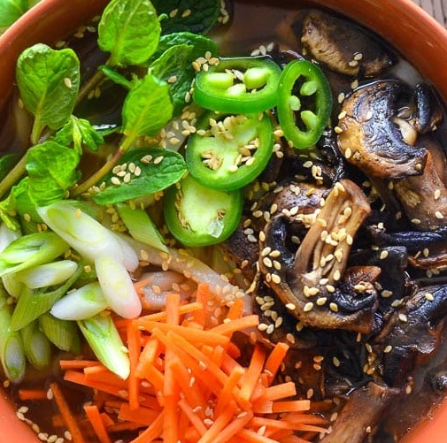

Udon Noodle Soup

Description
This recipe made it's way into the dinner rotation during this last winter. The broth is key.
Ingredients
- Shitake and other mushrooms
- Spring Onion
- Garlic
- Grated Ginger
- Sliced Carrot
- Eggplant
- Greens
- Tofu
- Udon noodles
- Broth - in a pinch Pho Broth is easy to get
- Soy Sauce
- Sesame Oil
Instructions
- Cook mushrooms and vegetables in a pot with oil with garlic and ginger. When ready add the tofu and simmer until ready to add the broth.
- Add the broth and any additional seasoning to taste. Add noodles and simmer briefly before serving.